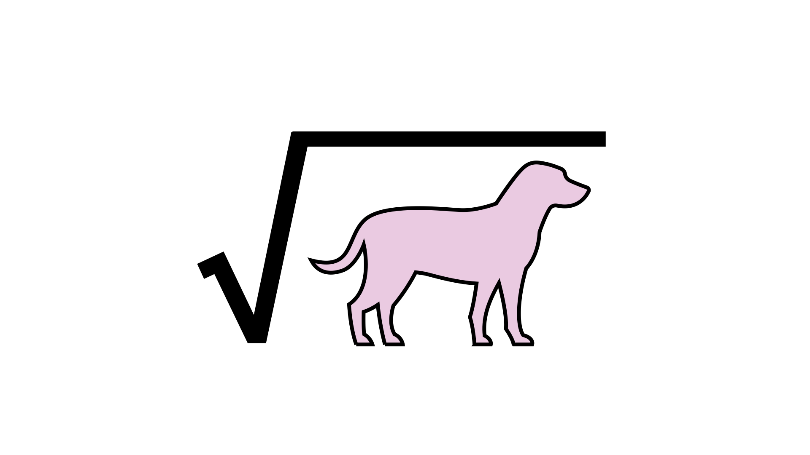

Psychology PhD Student at Johns Hopkins University
Generating explanations is central to our ability to understand the world around us. How early does this ability develop? Here, we are seeing whether 16–20-month-old infants can generate explanations about how a surprising event occurred.
Children often prefer teleological explanations (which appeal to function) over mechanistic explanations (which appeal to underlying processes) when explaning biological and natural kinds — a tendency which constrasts adults' preferences. Under what circumstances might children instead prefer mechanistic explanations? Here, we tested whether causal knowledge and explanatory motivation influenced 4–7-year-old children's explanation preferences. We found that when asked to explain events involving physical object interactions, children preferred mechanistic explanations, and that this preference was even greater when the events were surprising.
We often don't know why things happen. But, we can still evaluate candidate explanations and cater our explanation-seeking behaviors accordingly. For example, when a magician pulls a rabbit out of a hat, you may think that the hat is the magical object rather than the rabbit. When doing this, you are using your understanding of the causal structure of the event to weigh the likelihood that a given item is the source of the explanation. We are currently testing whether 12–15-month-old infants have this ability.

There is much research investigating children's understanding of possible and impossible events. But how do children think about things that are even more impossible than impossible events? Here, we are seeing whether 4–7-year-old children distinguish between impossible events (events that could not happen in our world but could happen in another possible world; e.g., baking a cake inside of a freezer) and inconceivable events (events that could not happen in any possible world; e.g., baking a cake inside of a yawn or taking the square root of a dog).